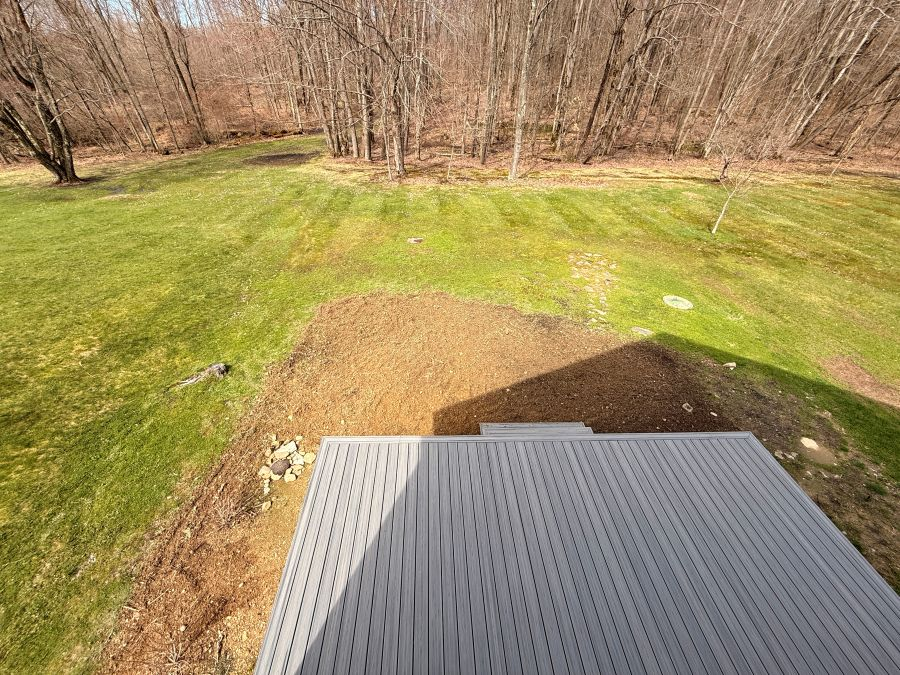
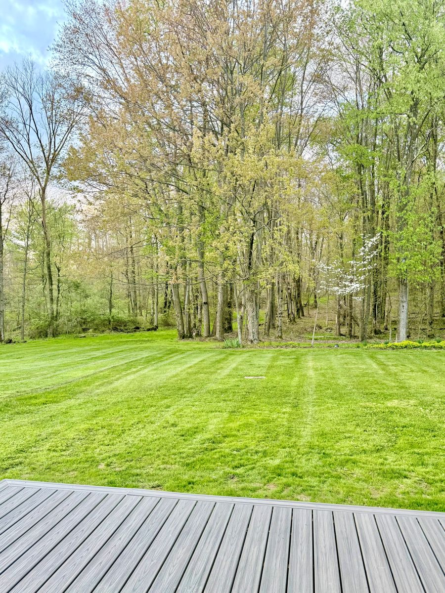
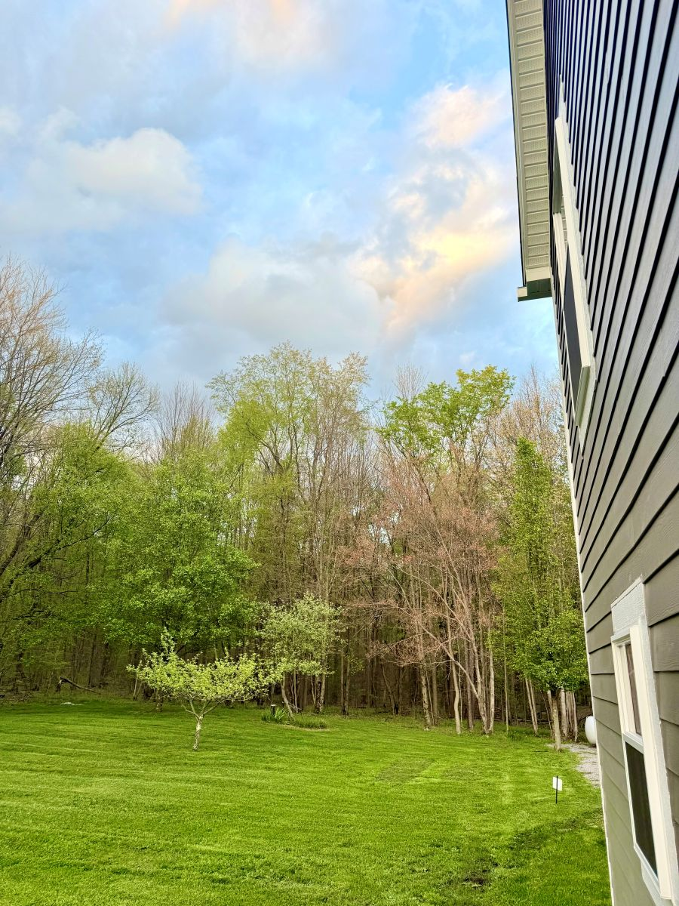
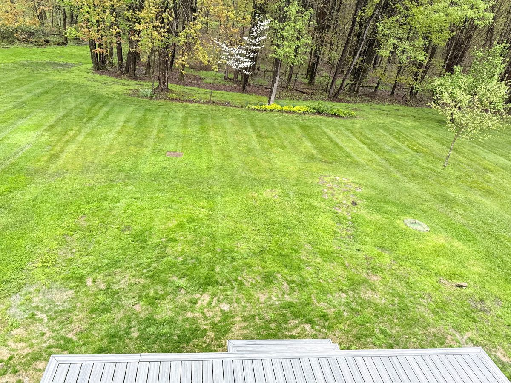

The area behind the house has seen more disruption than anything else on the property. Renovation work around the back deck left the soil exposed and compacted, a mix of glacial till and heavy clay that hasn’t been truly workable in decades. Long before that, this part of the land was an orchard. The peach trees are gone now, but three of the original apple trees still stand, along with a few younger ones planted and forgotten over the years. The soil tells the story: dense, tired, and pressed down by time.
While the long-term landscaping will take years to shape, there’s an immediate need to get grass established. Without it, every step from the yard to the deck brings mud with it — a small but constant reminder that the ground isn’t ready to support anything yet. Before seeding in late March, the soil needs a head start: aeration, light tilling, and a balanced fertilizer to begin loosening what’s been compacted for half a century.
The back left corner adds another layer to the work. For years, this was the family burn pile — mostly paper and cardboard. The ash left behind has changed the soil in ways the deck area hasn’t. Ash tends to push soil toward the alkaline side, while clay-heavy ground often leans acidic. Both areas need attention; the deck side needs structure, and the burn-pile corner needs balance.
For the first stage, the simplest step was the most effective: a general 10‑10‑10 fertilizer, the same one used to feed the apple trees. It provided a baseline — a reset before the real work began.
Breaking Ground

The ground sat for roughly one month after being fertilized, allowing the nutrients to absorb through the early spring rain and snow. It was fortuitous that the day I decided to till the topsoil followed a significant rainstorm; the ground was soft enough to work without being muddy. Using a battery-powered cultivator, I made easy work of tilling the top three to four inches. The process even helped surface stones that had been hidden for years. I spent the afternoon clearing the area, hauling stones away to let the earth finally breathe.
To help restore the old brick walkway area, I integrated ten bags of fresh topsoil, creating a fertile bed for the fifty‑pound bag of tall fescue seed. Even the old burn pile area, which had caused some worry, tilled beautifully.
The Green Carpet Emerges


One month after putting the seed down, the transformation is undeniable. While we initially worried about the lack of manual watering, the volatile East Coast spring provided more than enough rain to spark growth. Within just three weeks, the beginnings of a green carpet have appeared.

The areas with grass have already been mowed and are holding up beautifully. We are thrilled to finally use the backyard without tracking mud into the house. There are still a few bare spots, but with a little extra seed and another month of growth, we expect a lush result by the end of May. Grass first, then paths, then plantings — one layer at a time, the backyard is finally finding its shape.